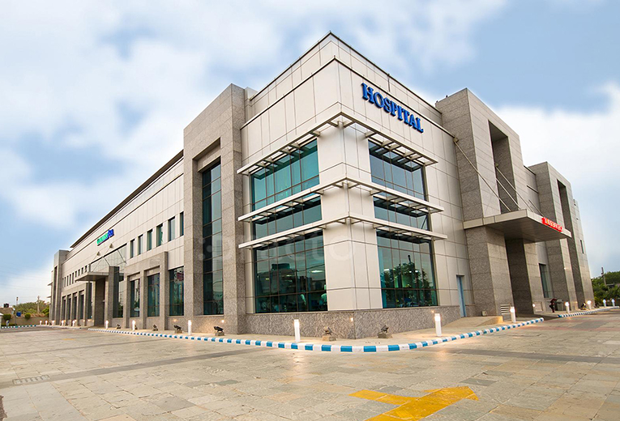
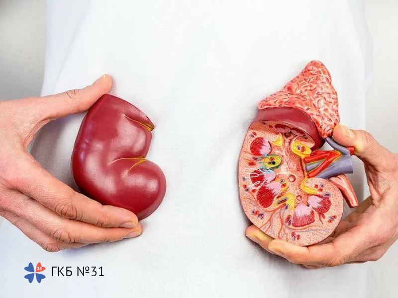
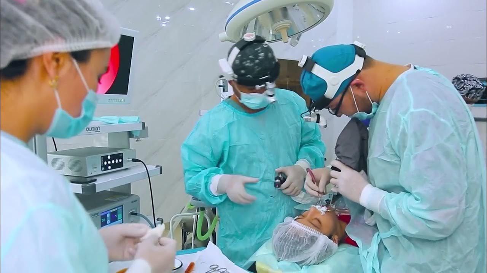

O'zbekcha
O'zbekcha Русский
Русский English
EnglishOnkologiya
Saraton kasalliklarini isbotlangan natijalar bilan davolash.
MedMapp platformasi orqali Hindistondagi eng mashhur shifoxonalarda davolaning!
Soch ko‘chirishdan tortib, yurak transplantatsiyasigacha bo‘lgan barcha tibbiy ehtiyojlaringizni qoplaymiz.
Saraton kasalliklarini isbotlangan natijalar bilan davolash.
Kattalar va bolalar uchun nevrologik jarrohlik muolajalari.
Harakatni yaxshilash uchun aniq jarrohlik amaliyotlari.
Kattalar va bolalar uchun jahon darajasidagi yurak parvarishi.
Bo'g'imlarni almashtirish va suyak deformatsiyasini davolash.
Bepushtlikni yuqori muvaffaqiyat bilan davolash usullari.
Ayollar salomatligi uchun ixtisoslashgan xizmatlar.
Siz uchun yangi ko'rinish beruvchi estetik muolajalar.
Samarali bariatrik jarrohlik yo'li bilan vaznni kamaytirish.
Turli murakkablikdagi jigar ko'chirish amaliyotlari.
Buyrakni ko'chirib o'tkazish va parvarishlash bo'yicha ekspert.
Mos keluvchi va mos kelmaydigan donorlar uchun variantlar.


Biz doimiy ravishda davolash sifatini pasaytirmasdan yaxshiroq narxlar va alternativalar bo'yicha muzokaralar olib boramiz. Bizning narxlarimiz doimiy ravishda past.
Mamnun memorlar
Xalqaro klinikalar
Jahon darajasidagi shifokorlar
4 oddiy qadamda Hindistonda davolanishni tashkil qilamiz.
Kasallik tafsilotlarini biz bilan baham ko'ring va jamoamiz siz bilan bog'lanadi.
48 soat ichida tibbiy xulosa va davolanishning taxminiy narxini oling.
Parvozlarni bron qiling va aeroportda jamoamiz tomonidan kutib olinasiz.
Davolanasiz va keyingi kuzatuvlar uchun biz siz bilan doimiy aloqada bo'lamiz.



Sizga jamoamizning maxsus menejeri yordam beradi. Bizdan kutishingiz mumkin bo'lgan xizmatlar ro'yxati BEPUL.
Tezkor fikrlar va xarajatlar smetasini oling.
Sayohat qilishdan oldin davolanish jarayonini tushunib oling.
To'liq tibbiy viza yordamini oling.
Har qadamda til to'siqlarini yengish uchun malakali mutaxassislar.
Kasalxona yaqinida va byudjetingizga mos.
Tibbiy logistikaning to'liq muvofiqlashtirilishi.

Rais - Laparoskopik, Endoskopik, Bariatrik jarrohlik instituti
Sizning sog'liq ma'lumotlaringiz himoyalangan

Vitreoretinal jarroh, Bosh klinik xizmatlar
Sizning sog'liq ma'lumotlaringiz himoyalangan

Tibbiy direktor - Oftalmologiya
Sizning sog'liq ma'lumotlaringiz himoyalangan
Sog'liqni saqlash bo'yicha ehtiyojlaringiz uchun tez va ishonchli yechimlar.